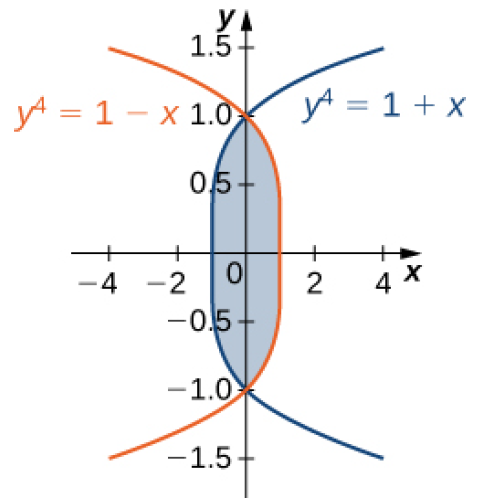

Approximate volume under surface \(z = f(x,y) = \cos(x)\cos(y)\) for \( 0\leq x,y \leq \pi/2\) using 4 subdivisions.
(images from The Science of Hitting and Baseball with R).
Consider a concert hall 50 m long and 30 meters wide. Chairs are 1.0 m by 0.8 m. Aisles are negligible. Crowd is sold out.
Evaluate each integral as written. Then evaluate with the order reversed.
Theorem (Fubini) Suppose that \(f(x,y)\) is a function of two variables that is continuous over a rectangular region \(R = \{ (x,y)\in \mathbb{R}^2 | a \leq x \leq b, c \leq y \leq d \} \).
Then we have that
\( \displaystyle \int\int_R f(x,y)~dA = \int\int_R f(x,y)~dx~dy = \int_c^d \int_a^b f(x,y)~dx~dy = \int_a^b \int_c^d f(x,y)~dy~dx.\)
More genereally, this is true if \(f\) is bounded on \(R\) and \(f\) is discontinuous only on a finite number of continuous curves, i.e. \(f\) is integrable.
Consider a flat plate of metal with variable density \(\rho(x,y) = e^{2x+y}\) kg/m\(^2\) and \(0 \leq x \leq 2, 0\leq y \leq 4\) m. What is the mass of the sheet?
Consider a flat plate of metal with variable density \(\rho(x,y) = 1 + 3x^2 + 2y\) kg/m\(^2\) and \(-1 \leq x \leq 1, 0\leq y \leq 1\) m.
Consider a triangular plate with vertices (0,0), (1,0), and (0,2).
Consider the integral \(\displaystyle \int_0^6 \int_{x/3}^2 x \sqrt{y^3 + 1}~dy~dx\).
Find the mass of a metal plate bounded by \(y=x\) and \(y=x^2\) with density \(\rho(x,y) = 1 + xy\) in kg/m\(^2\).
Find the average value of \(f(x,y)= x\) over the region bounded by \(y=e^x, y = 0, x = 0,\) and \(x=1\).
Set up a double integral that represents the area of the region bounded by \(x=0, y=3-x^2\), and \(y = 1 + x^5\).
Calculate this area.
Sketch the region of integration for the following integrals. Then write each integral with the order reversed.
The region \(D\) is given in the figure below.
Evaluate the double integral \(\displaystyle \iint_D (x^2 - y^2)~dA\) by using the easier order of integration.

Find the volume of the solid bounded by the planes \(x + y = 1, x − y = 1, x = 0, z = 0,\) and \(z = 10\).
Consider \(X\) and \(Y\) two random variables of
probability densities \(p_1(x)\) and \(p_2(y)\), respectively. The
random variables \(X\) and \(Y\) are said to be independent if
their joint density function is given by
\(p(x, y) = p_1(x)p_2(y)\). At a drive-thru restaurant,
customers spend, on average, 3 minutes placing their
orders and an additional 5 minutes paying for and picking
up their meals. Assume that placing the order and paying
for/picking up the meal are two independent events \(X\) and
\(Y\). If the waiting times are modeled by the exponential
probability densities
\(\displaystyle p_1(x) = \begin{cases} \frac{1}{3}e^{-x/3}, & x \geq 0\\ 0 & \text{otherwise},\end{cases}\)
and
\(\displaystyle p_2(y) = \begin{cases} \frac{1}{5}e^{-y/5}, & y \geq 0\\ 0 & \text{otherwise},\end{cases}\)
respectively, the probability that a customer will spend less
than 6 minutes in the drive-thru line is given by
\(\displaystyle P\left[X + Y \leq 6\right] = \iint_D p(x, y)~dx~dy,\) where
\(\displaystyle D = \left\{ (x,y) | x,y \geq 0, x+y \leq 6 \right\}\).
Find
\(\displaystyle P\left[X + Y \leq 6\right]\) and interpret the result.